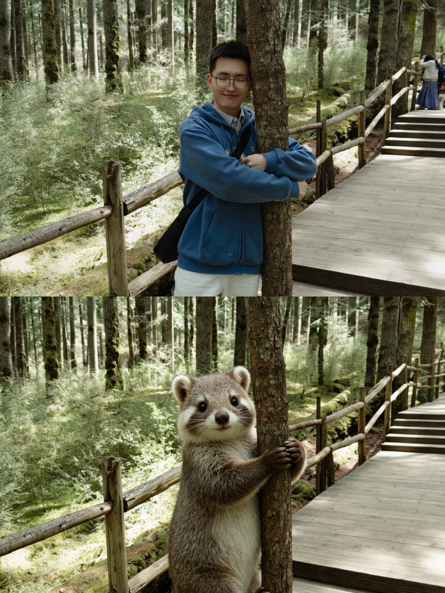

BrainNeRF
EEG spatial super-resolution using neural fields and physics-guided learning.
SOMBER
Passing forward the kindness I have received.
AI FOR HEALTHCARE · BRAIN–COMPUTER INTERFACES
Undergraduate Researcher
I am interested in building trustworthy AI systems that bridge neuroscience, medicine, and human well-being through Brain–Computer Interfaces and computational intelligence.
Current Focus
Physics-guided EEG Spatial Super-Resolution

我希望把社会给予我的温暖， 通过研究，再传递给更多的人。
Research, to me, is not only about solving technical problems. It is also a way to carry kindness forward — from people who once helped me, to people I may never meet.
CURRENT PROJECT
Physics-guided neural field for EEG spatial super-resolution, reconstructing high-density EEG signals from sparse electrode observations.
Preparing AAAI Submission
EEG spatial super-resolution using neural fields and physics-guided learning.
Multimodal analysis for early diagnosis using EEG, MRI, and olfactory signals.
Biomedical materials for flexible sensing and healthcare applications.
AI, neuroscience, philosophy, history, and the questions between them.
Forests, campuses, quiet light, and the small scenes that make research human.